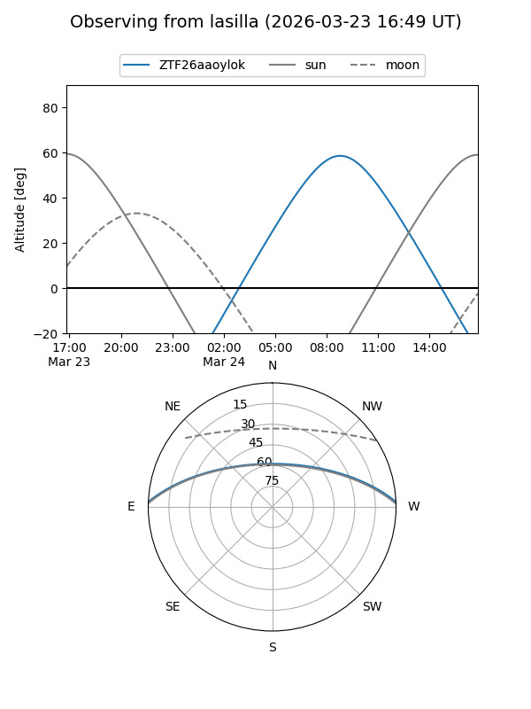
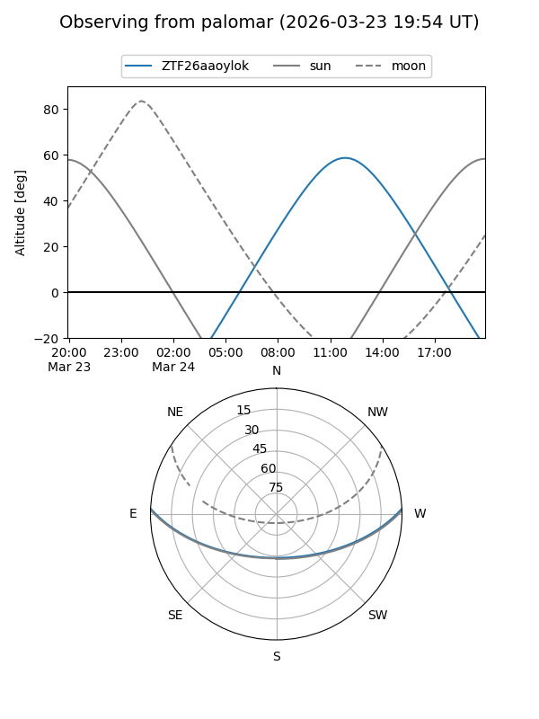

ZTF26aaoylok
Target ZTF26aaoylok at 2026-03-23 12:29
Aliases and brokers:
FINK: link
Lasair: link
ALeRCE: link
alt names
ZTF26aaoylok (ztf,fink_ztf)
Coordinates:
equatorial (ra, dec) = 242.6575,+2.14624
equatorial (HMS+DMS) = 16:10:37.80,+02:08:46.46
galactic (l, b) = (14.0669,+36.23845)
Flags:
Photometry:
last ztfg=17.93
1 ztfg detections
Lightcurve
Visibility


Additional plots